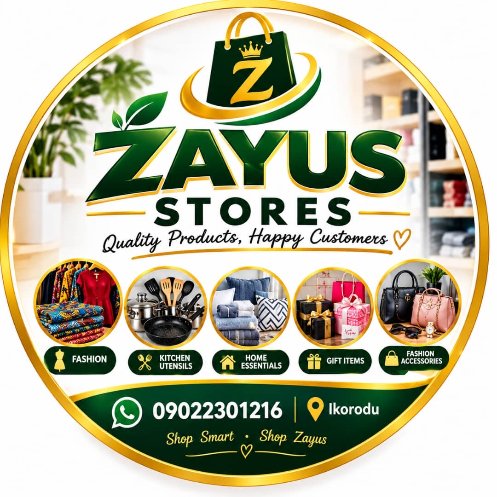

01 / RETAIL
STYLEHOMEGIFTS
Z
Zayus Stores
Fashion, kitchen utensils, home essentials, gifts, accessories, footwear and more.
Browse products →
Your one-stop destination for everyday essentials, thoughtful gifts, tasty Nigerian meals, catering and event services in Ikorodu, Lagos.
Quality products
& memorable meals
Browse our store or discover delicious meals. Add your picks to the cart and send your order through WhatsApp.
Fashion, kitchen utensils, home essentials, gifts, accessories, footwear and more.
Browse products →Nigerian favourites, snacks, small chops, catering and event planning for special occasions.
Explore the menu →From useful everyday finds to meals worth gathering around, Zayus brings shopping and food together in one convenient place.
View your cart →Questions about a product, a food order, catering or an event? Contact the right Zayus team directly.